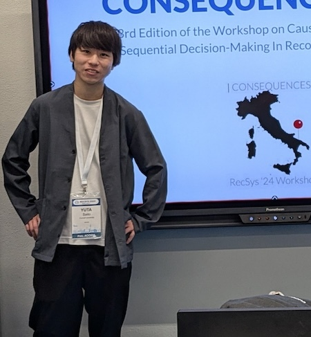

Jan-Dec 2024
Timetable for the TrustML YSS online seminars from Jan. to Dec., 2024.
Time (JST)
Time (Your Browser)
Title
Speaker
Video Link
9:00-10:00 27/02/2024
Online Label Shift: Optimal Dynamic Regret meets Practical Algorithms:
Dheeraj Baby (UC Santa Barbara)
Video
15:00-16:00 26/03/2024
Video Prediction and Infilling with Diffusion Models:
Tobias Höppe (Helmholtz AI)
Video
10:00-11:00 31/05/2024
Variational inference via Wasserstein gradient flows:
Sinho Chewi (Institute for Advanced Study)
No Video
15:00-16:00 10/06/2024
Provably Robust DPO: Aligning Language Models with Noisy Feedback:
Sayak Ray Chowdhury (Microsoft Research, India)
No Video
10:30-11:30 25/06/2024
Feature Interaction Selection (FIS) and its Applications in Structure Learning, Robust Generalization, and Interpretability:
James Enouen (University of Southern California)
Video
10:30-12:00 02/09/2024
Reliable data use: Synthesis, retrieval, and interaction:
Pang Wei Koh (University of Washington)
Video
13:30-14:30 03/12/2024
Rethinking Data Origins: Crowdsourcing for Ethical and Human-Centric AI Solutions:
Simo Hosio (University of Oulu)
Video
15:00-16:00 18/12/2024
Reliable Model Predictions in the Open World Through the Lens of OOD Detection:
Yadan Luo (University of Queensland)
Video
11:00-12:00 19/12/2024
意思決定システムのためのデータに基づく報酬関数設計:
齋藤優太 (コーネル大学)

No Video
11:00-12:00 27/12/2024
Sampling is Reinforcement Learning and Generative Modeling is Imitation Learning:
Sangwoong Yoon (Korea Institute for Advanced Study (KIAS))
Video